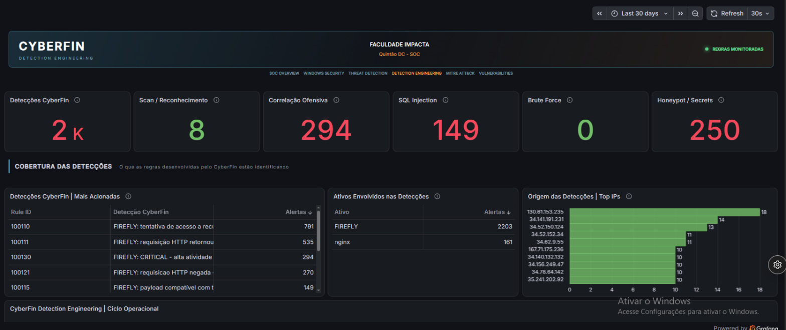
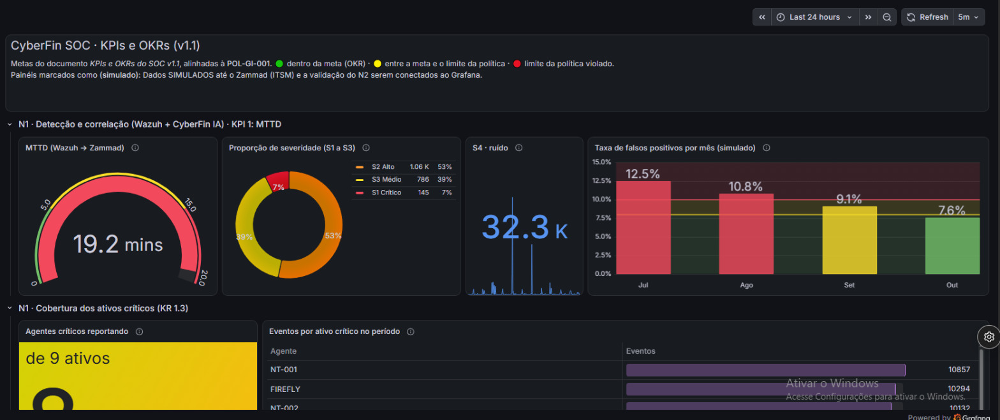

Objetivos, resultados-chave e indicadores do time do SOC para o ciclo de avaliação, no mesmo modelo da declaração do GRC.
Formalizar os dois OKRs do SOC e os oito KPIs que medem cada um, com fórmula, valor de hoje, meta e frequência.
Um SOC que enxerga todo o ambiente e transforma cada alerta relevante em incidente tratado dentro do prazo da política.
OKR 1 mede a primeira metade: se o SOC vê o evento e se a regra dispara. OKR 2 mede a segunda: quanto tempo leva até virar ticket e até ser resolvido.
O SOC só responde ao que vê. Ativo sem agente é ponto cego, e regra que não dispara deixa o ataque passar sem alerta.
Wazuh 4.14.6 com 30 regras customizadas (29 do ambiente e a 100001, de exemplo). O NT-003 não enviava eventos: o firewall bloqueia as portas 1514 e 1515 da VLAN 60.

Quanto mais cedo um alerta vira ticket, menor o dano; a política dá 15 minutos. Alerta que chega e ninguém trata é um ataque sem resposta, e falso positivo toma o tempo do analista.
Fluxo Wazuh → Cyberappfin → Zammad funcionando, com caso homologado (GET /.env → 403 → regra 100160). O tempo até o ticket ficou em 19 minutos, acima do limite.
O laboratório não tem operação real: não há clientes nem incidentes em volume. Medimos o que o ambiente mostra e projetamos o resto para o cenário da empresa.

O ticket nasce do alerta, sem esperar a IA. É o caminho para sair de 19 e chegar a 5 minutos.
Abrir TCP 1514 e 1515 da VLAN 60 até o Wazuh para chegar a 9 de 9 ativos críticos.
Com o token de API, o MTTR e os demais tempos passam a ser calculados direto dos tickets.